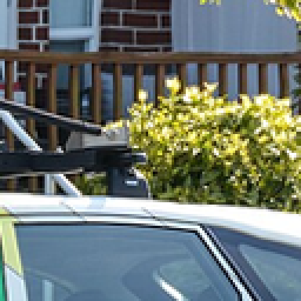
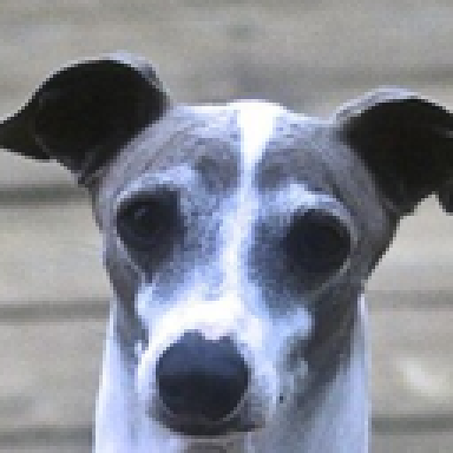
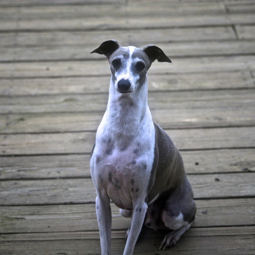
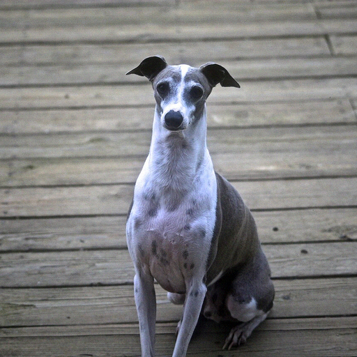
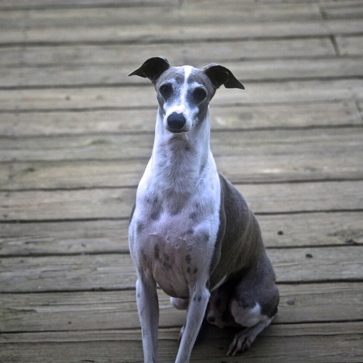
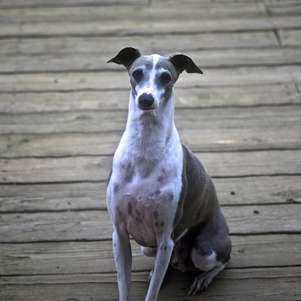
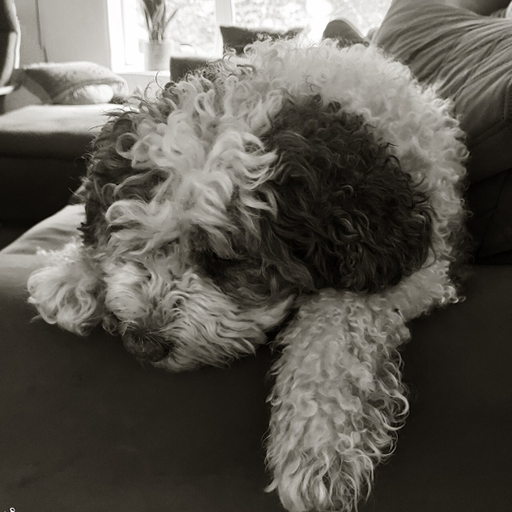
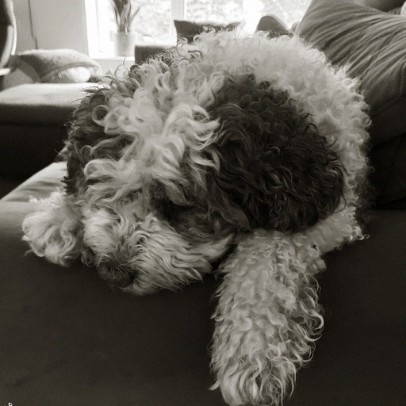
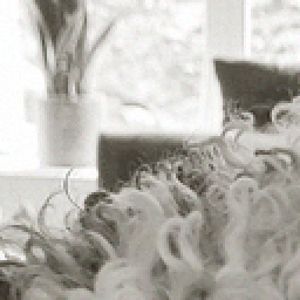

等 LPIPS 的模糊 vs 雜訊
同一組裡的每個版本都已校準到相同的 LPIPS。若 LPIPS 真的
代表人眼可辨失真，它們應該一樣明顯。請按數字鍵（或點按鈕）在滑鼠所在
的面板上原地切換，判斷是否同樣明顯。τ=0.05 的組另有兩個空間變形版本，
差別只在重取樣是雙線性還是雙三次——量測說兩者的銳利度差 15 個百分點
（85.0% vs 99.9%），請確認人眼是否同意，以及 0.4–0.6 px 的位移本身是否可見。
右側為 4× 最近鄰放大，位置取原圖梯度能量最高處，各版本同一座標。
指標數值預設收起。
car_00
目標 LPIPS 0.02 · 實測 模糊 0.0200 /
雜訊 0.0200
σ = 0.481 · 雜訊振幅 = 0.0086
展開指標數值（先看圖）
| 指標 | 模糊 | 雜訊 |
|---|
| lpips | 0.0200 | 0.0200 |
| acutance_ratio | 0.7403 | 1.0005 |
| stlpips | 0.0268 | 0.0015 |
| musiq | 78.6687 | 78.6830 |
| gmsd | 0.0098 | 0.0016 |
| nlpd | 0.0586 | 0.0365 |
| vif_p | 0.7370 | 0.8946 |
| haarpsi | 0.9728 | 0.9944 |
| dists | 0.0106 | 0.0025 |
| ms_ssim | 0.9969 | 0.9981 |
| ssim | 0.9942 | 0.9963 |
| psnr | 32.5713 | 41.3270 |
| niqe | 2.5163 | 2.8361 |
car_00
目標 LPIPS 0.05 · 實測 模糊 0.0499 /
雜訊 0.0499
σ = 0.565 · 雜訊振幅 = 0.0151


展開指標數值（先看圖）
| 指標 | 模糊 | 雜訊 | 變形-雙線性 | 變形-雙三次 |
|---|
| lpips | 0.0499 | 0.0499 | 0.0501 | 0.0500 |
| acutance_ratio | 0.6202 | 1.0027 | 0.7733 | 0.9745 |
| local_acutance_dev | 0.3797 | 0.0055 | 0.2267 | 0.0317 |
| local_acutance_signed | -0.3797 | 0.0027 | -0.2266 | -0.0255 |
| stlpips | 0.0616 | 0.0080 | 0.0243 | 0.0054 |
| musiq | 78.3174 | 78.6206 | 78.7377 | 78.8129 |
| gmsd | 0.0214 | 0.0048 | 0.0659 | 0.0834 |
| nlpd | 0.0939 | 0.0629 | 0.2087 | 0.2650 |
| vif_p | 0.6308 | 0.7906 | 0.5185 | 0.4384 |
| haarpsi | 0.9433 | 0.9837 | 0.8759 | 0.8323 |
| dists | 0.0212 | 0.0120 | 0.0154 | 0.0160 |
| ms_ssim | 0.9923 | 0.9945 | 0.9805 | 0.9710 |
| ssim | 0.9854 | 0.9889 | 0.9617 | 0.9427 |
| psnr | 28.9128 | 36.4745 | 26.3566 | 24.4380 |
| niqe | 2.7339 | 3.1177 | 2.6261 | 2.7015 |
car_00
目標 LPIPS 0.10 · 實測 模糊 0.1001 /
雜訊 0.1001
σ = 0.688 · 雜訊振幅 = 0.0257
展開指標數值（先看圖）
| 指標 | 模糊 | 雜訊 |
|---|
| lpips | 0.1001 | 0.1001 |
| acutance_ratio | 0.4986 | 1.0093 |
| stlpips | 0.1166 | 0.0353 |
| musiq | 76.9051 | 78.4463 |
| gmsd | 0.0374 | 0.0129 |
| nlpd | 0.1361 | 0.1034 |
| vif_p | 0.5410 | 0.6645 |
| haarpsi | 0.9032 | 0.9579 |
| dists | 0.0371 | 0.0345 |
| ms_ssim | 0.9840 | 0.9858 |
| ssim | 0.9692 | 0.9710 |
| psnr | 26.1832 | 31.9220 |
| niqe | 3.3324 | 3.9580 |
car_01
目標 LPIPS 0.02 · 實測 模糊 0.0200 /
雜訊 0.0200
σ = 0.471 · 雜訊振幅 = 0.0101
展開指標數值（先看圖）
| 指標 | 模糊 | 雜訊 |
|---|
| lpips | 0.0200 | 0.0200 |
| acutance_ratio | 0.7967 | 1.0016 |
| stlpips | 0.0222 | 0.0018 |
| musiq | 67.6164 | 68.6549 |
| gmsd | 0.0063 | 0.0019 |
| nlpd | 0.0470 | 0.0426 |
| vif_p | 0.8011 | 0.8709 |
| haarpsi | 0.9831 | 0.9930 |
| dists | 0.0124 | 0.0035 |
| ms_ssim | 0.9982 | 0.9977 |
| ssim | 0.9966 | 0.9961 |
| psnr | 35.3515 | 39.9445 |
| niqe | 2.2425 | 2.3914 |
car_01
目標 LPIPS 0.05 · 實測 模糊 0.0500 /
雜訊 0.0500
σ = 0.549 · 雜訊振幅 = 0.0168
展開指標數值（先看圖）
| 指標 | 模糊 | 雜訊 | 變形-雙線性 | 變形-雙三次 |
|---|
| lpips | 0.0500 | 0.0500 | 0.0499 | 0.0500 |
| acutance_ratio | 0.6959 | 1.0051 | 0.8201 | 0.9959 |
| local_acutance_dev | 0.3041 | 0.0069 | 0.1799 | 0.0204 |
| local_acutance_signed | -0.3041 | 0.0051 | -0.1799 | -0.0040 |
| stlpips | 0.0524 | 0.0096 | 0.0227 | 0.0054 |
| musiq | 65.6944 | 66.4602 | 67.6407 | 68.1982 |
| gmsd | 0.0141 | 0.0051 | 0.0527 | 0.0753 |
| nlpd | 0.0752 | 0.0704 | 0.1741 | 0.2453 |
| vif_p | 0.7033 | 0.7676 | 0.5852 | 0.4724 |
| haarpsi | 0.9628 | 0.9814 | 0.9062 | 0.8493 |
| dists | 0.0260 | 0.0132 | 0.0197 | 0.0204 |
| ms_ssim | 0.9955 | 0.9938 | 0.9872 | 0.9757 |
| ssim | 0.9914 | 0.9893 | 0.9747 | 0.9520 |
| psnr | 31.5571 | 35.5009 | 28.4058 | 25.4945 |
| niqe | 2.8299 | 2.9859 | 2.0230 | 2.0508 |
car_01
目標 LPIPS 0.10 · 實測 模糊 0.1001 /
雜訊 0.1000
σ = 0.665 · 雜訊振幅 = 0.0270
展開指標數值（先看圖）
| 指標 | 模糊 | 雜訊 |
|---|
| lpips | 0.1001 | 0.1000 |
| acutance_ratio | 0.5850 | 1.0135 |
| stlpips | 0.1030 | 0.0409 |
| musiq | 61.2518 | 62.7380 |
| gmsd | 0.0256 | 0.0120 |
| nlpd | 0.1102 | 0.1102 |
| vif_p | 0.6131 | 0.6513 |
| haarpsi | 0.9323 | 0.9561 |
| dists | 0.0471 | 0.0366 |
| ms_ssim | 0.9902 | 0.9852 |
| ssim | 0.9811 | 0.9738 |
| psnr | 28.5874 | 31.4182 |
| niqe | 3.6938 | 4.1105 |
dog_00
目標 LPIPS 0.02 · 實測 模糊 0.0199 /
雜訊 0.0200
σ = 0.437 · 雜訊振幅 = 0.0068


展開指標數值（先看圖）
| 指標 | 模糊 | 雜訊 |
|---|
| lpips | 0.0199 | 0.0200 |
| acutance_ratio | 0.9003 | 1.0059 |
| stlpips | 0.0048 | 0.0029 |
| musiq | 69.6425 | 71.2575 |
| gmsd | 0.0010 | 0.0010 |
| nlpd | 0.0227 | 0.0341 |
| vif_p | 0.9487 | 0.9060 |
| haarpsi | 0.9972 | 0.9953 |
| dists | 0.0052 | 0.0027 |
| ms_ssim | 0.9995 | 0.9981 |
| ssim | 0.9993 | 0.9968 |
| psnr | 46.6342 | 43.3070 |
| niqe | 4.3323 | 5.1026 |
dog_00
目標 LPIPS 0.05 · 實測 模糊 0.0499 /
雜訊 0.0500
σ = 0.491 · 雜訊振幅 = 0.0116




展開指標數值（先看圖）
| 指標 | 模糊 | 雜訊 | 變形-雙線性 | 變形-雙三次 |
|---|
| lpips | 0.0499 | 0.0500 | 0.0499 | 0.0500 |
| acutance_ratio | 0.8480 | 1.0168 | 0.8974 | 1.0041 |
| local_acutance_dev | 0.1517 | 0.0175 | 0.1025 | 0.0228 |
| local_acutance_signed | -0.1517 | 0.0170 | -0.1023 | 0.0043 |
| stlpips | 0.0114 | 0.0172 | 0.0062 | 0.0026 |
| musiq | 68.2764 | 71.1760 | 69.3369 | 70.5797 |
| gmsd | 0.0026 | 0.0029 | 0.0249 | 0.0458 |
| nlpd | 0.0357 | 0.0572 | 0.0804 | 0.1317 |
| vif_p | 0.8952 | 0.8052 | 0.8078 | 0.6691 |
| haarpsi | 0.9932 | 0.9872 | 0.9711 | 0.9322 |
| dists | 0.0099 | 0.0073 | 0.0105 | 0.0169 |
| ms_ssim | 0.9988 | 0.9946 | 0.9958 | 0.9891 |
| ssim | 0.9983 | 0.9908 | 0.9930 | 0.9812 |
| psnr | 42.8579 | 38.7439 | 38.7213 | 34.4975 |
| niqe | 4.3658 | 5.5025 | 4.0389 | 4.0522 |
dog_00
目標 LPIPS 0.10 · 實測 模糊 0.1001 /
雜訊 0.1000
σ = 0.562 · 雜訊振幅 = 0.0179
展開指標數值（先看圖）
| 指標 | 模糊 | 雜訊 |
|---|
| lpips | 0.1001 | 0.1000 |
| acutance_ratio | 0.7894 | 1.0403 |
| stlpips | 0.0227 | 0.0636 |
| musiq | 66.2972 | 70.8296 |
| gmsd | 0.0052 | 0.0068 |
| nlpd | 0.0511 | 0.0874 |
| vif_p | 0.8319 | 0.6890 |
| haarpsi | 0.9866 | 0.9714 |
| dists | 0.0174 | 0.0186 |
| ms_ssim | 0.9976 | 0.9875 |
| ssim | 0.9963 | 0.9784 |
| psnr | 39.9146 | 34.9340 |
| niqe | 4.6832 | 6.1486 |
dog_01
目標 LPIPS 0.02 · 實測 模糊 0.0200 /
雜訊 0.0199
σ = 0.448 · 雜訊振幅 = 0.0037
展開指標數值（先看圖）
| 指標 | 模糊 | 雜訊 |
|---|
| lpips | 0.0200 | 0.0199 |
| acutance_ratio | 0.8746 | 1.0014 |
| stlpips | 0.0079 | 0.0004 |
| musiq | 62.6743 | 64.6490 |
| gmsd | 0.0011 | 0.0004 |
| nlpd | 0.0238 | 0.0196 |
| vif_p | 0.9358 | 0.9578 |
| haarpsi | 0.9964 | 0.9987 |
| dists | 0.0057 | 0.0021 |
| ms_ssim | 0.9995 | 0.9992 |
| ssim | 0.9991 | 0.9985 |
| psnr | 45.4469 | 48.5848 |
| niqe | 2.9857 | 3.1187 |
dog_01
目標 LPIPS 0.05 · 實測 模糊 0.0500 /
雜訊 0.0500
σ = 0.511 · 雜訊振幅 = 0.0065


展開指標數值（先看圖）
| 指標 | 模糊 | 雜訊 | 變形-雙線性 | 變形-雙三次 |
|---|
| lpips | 0.0500 | 0.0500 | 0.0500 | 0.0500 |
| acutance_ratio | 0.8091 | 1.0043 | 0.8723 | 1.0126 |
| local_acutance_dev | 0.1907 | 0.0053 | 0.1273 | 0.0246 |
| local_acutance_signed | -0.1907 | 0.0044 | -0.1273 | 0.0128 |
| stlpips | 0.0189 | 0.0023 | 0.0107 | 0.0046 |
| musiq | 61.0297 | 63.9344 | 62.9320 | 65.0350 |
| gmsd | 0.0028 | 0.0011 | 0.0268 | 0.0551 |
| nlpd | 0.0377 | 0.0338 | 0.1001 | 0.1866 |
| vif_p | 0.8749 | 0.8954 | 0.7387 | 0.5348 |
| haarpsi | 0.9912 | 0.9961 | 0.9523 | 0.8739 |
| dists | 0.0123 | 0.0077 | 0.0103 | 0.0146 |
| ms_ssim | 0.9988 | 0.9975 | 0.9947 | 0.9821 |
| ssim | 0.9977 | 0.9955 | 0.9899 | 0.9654 |
| psnr | 41.6094 | 43.7950 | 36.7568 | 31.3662 |
| niqe | 3.2877 | 3.2282 | 3.0162 | 2.9469 |
dog_01
目標 LPIPS 0.10 · 實測 模糊 0.1001 /
雜訊 0.1000
σ = 0.587 · 雜訊振幅 = 0.0105



展開指標數值（先看圖）
| 指標 | 模糊 | 雜訊 |
|---|
| lpips | 0.1001 | 0.1000 |
| acutance_ratio | 0.7424 | 1.0113 |
| stlpips | 0.0357 | 0.0095 |
| musiq | 58.9780 | 62.2047 |
| gmsd | 0.0055 | 0.0029 |
| nlpd | 0.0529 | 0.0542 |
| vif_p | 0.8119 | 0.7990 |
| haarpsi | 0.9828 | 0.9900 |
| dists | 0.0214 | 0.0204 |
| ms_ssim | 0.9976 | 0.9935 |
| ssim | 0.9954 | 0.9884 |
| psnr | 38.8364 | 39.5990 |
| niqe | 3.6749 | 3.4985 |
person_00
目標 LPIPS 0.02 · 實測 模糊 0.0200 /
雜訊 0.0201
σ = 0.456 · 雜訊振幅 = 0.0051
展開指標數值（先看圖）
| 指標 | 模糊 | 雜訊 |
|---|
| lpips | 0.0200 | 0.0201 |
| acutance_ratio | 0.9142 | 1.0049 |
| stlpips | 0.0034 | 0.0010 |
| musiq | 68.7609 | 70.1428 |
| gmsd | 0.0007 | 0.0006 |
| nlpd | 0.0171 | 0.0278 |
| vif_p | 0.9708 | 0.9354 |
| haarpsi | 0.9984 | 0.9976 |
| dists | 0.0049 | 0.0016 |
| ms_ssim | 0.9998 | 0.9986 |
| ssim | 0.9996 | 0.9977 |
| psnr | 49.6667 | 45.8540 |
| niqe | 5.2539 | 4.9299 |
person_00
目標 LPIPS 0.05 · 實測 模糊 0.0500 /
雜訊 0.0499
σ = 0.534 · 雜訊振幅 = 0.0081
展開指標數值（先看圖）
| 指標 | 模糊 | 雜訊 | 變形-雙線性 | 變形-雙三次 |
|---|
| lpips | 0.0500 | 0.0499 | 0.0500 | 0.0500 |
| acutance_ratio | 0.8614 | 1.0124 | 0.9032 | 1.0091 |
| local_acutance_dev | 0.1382 | 0.0130 | 0.0975 | 0.0410 |
| local_acutance_signed | -0.1382 | 0.0126 | -0.0965 | 0.0095 |
| stlpips | 0.0093 | 0.0051 | 0.0062 | 0.0047 |
| musiq | 67.2142 | 69.7823 | 68.5832 | 70.3553 |
| gmsd | 0.0020 | 0.0015 | 0.0315 | 0.0528 |
| nlpd | 0.0283 | 0.0440 | 0.1101 | 0.1694 |
| vif_p | 0.9321 | 0.8656 | 0.7778 | 0.6514 |
| haarpsi | 0.9957 | 0.9941 | 0.9523 | 0.9019 |
| dists | 0.0114 | 0.0054 | 0.0215 | 0.0327 |
| ms_ssim | 0.9993 | 0.9965 | 0.9936 | 0.9843 |
| ssim | 0.9989 | 0.9941 | 0.9884 | 0.9717 |
| psnr | 45.3586 | 41.7871 | 36.1056 | 32.2770 |
| niqe | 5.6857 | 5.1674 | 5.4324 | 4.9166 |
person_00
目標 LPIPS 0.10 · 實測 模糊 0.1000 /
雜訊 0.1001
σ = 0.675 · 雜訊振幅 = 0.0123
展開指標數值（先看圖）
| 指標 | 模糊 | 雜訊 |
|---|
| lpips | 0.1000 | 0.1001 |
| acutance_ratio | 0.7873 | 1.0280 |
| stlpips | 0.0238 | 0.0190 |
| musiq | 64.1286 | 69.0411 |
| gmsd | 0.0052 | 0.0034 |
| nlpd | 0.0443 | 0.0654 |
| vif_p | 0.8759 | 0.7722 |
| haarpsi | 0.9891 | 0.9869 |
| dists | 0.0264 | 0.0137 |
| ms_ssim | 0.9983 | 0.9922 |
| ssim | 0.9970 | 0.9868 |
| psnr | 41.5682 | 38.2150 |
| niqe | 6.3528 | 5.6289 |
person_01
目標 LPIPS 0.02 · 實測 模糊 0.0200 /
雜訊 0.0201
σ = 0.465 · 雜訊振幅 = 0.0047
展開指標數值（先看圖）
| 指標 | 模糊 | 雜訊 |
|---|
| lpips | 0.0200 | 0.0201 |
| acutance_ratio | 0.8366 | 1.0029 |
| stlpips | 0.0073 | 0.0009 |
| musiq | 73.5463 | 75.0087 |
| gmsd | 0.0015 | 0.0007 |
| nlpd | 0.0255 | 0.0262 |
| vif_p | 0.9344 | 0.9220 |
| haarpsi | 0.9940 | 0.9977 |
| dists | 0.0101 | 0.0027 |
| ms_ssim | 0.9994 | 0.9983 |
| ssim | 0.9989 | 0.9969 |
| psnr | 44.0955 | 46.6358 |
| niqe | 4.3915 | 4.5576 |
person_01
目標 LPIPS 0.05 · 實測 模糊 0.0500 /
雜訊 0.0500
σ = 0.545 · 雜訊振幅 = 0.0078
展開指標數值（先看圖）
| 指標 | 模糊 | 雜訊 | 變形-雙線性 | 變形-雙三次 |
|---|
| lpips | 0.0500 | 0.0500 | 0.0499 | 0.0500 |
| acutance_ratio | 0.7509 | 1.0088 | 0.8357 | 0.9952 |
| local_acutance_dev | 0.2489 | 0.0108 | 0.1640 | 0.0368 |
| local_acutance_signed | -0.2489 | 0.0090 | -0.1639 | -0.0045 |
| stlpips | 0.0184 | 0.0052 | 0.0097 | 0.0038 |
| musiq | 71.8737 | 74.5537 | 73.6576 | 75.2484 |
| gmsd | 0.0040 | 0.0018 | 0.0266 | 0.0471 |
| nlpd | 0.0417 | 0.0432 | 0.1072 | 0.1706 |
| vif_p | 0.8724 | 0.8284 | 0.7231 | 0.5581 |
| haarpsi | 0.9862 | 0.9938 | 0.9433 | 0.8833 |
| dists | 0.0206 | 0.0073 | 0.0200 | 0.0229 |
| ms_ssim | 0.9984 | 0.9953 | 0.9932 | 0.9832 |
| ssim | 0.9971 | 0.9915 | 0.9876 | 0.9690 |
| psnr | 40.1679 | 42.2243 | 35.2951 | 31.3468 |
| niqe | 4.6965 | 4.8056 | 4.2253 | 4.2413 |
person_01
目標 LPIPS 0.10 · 實測 模糊 0.1000 /
雜訊 0.1000
σ = 0.666 · 雜訊振幅 = 0.0124
展開指標數值（先看圖）
| 指標 | 模糊 | 雜訊 |
|---|
| lpips | 0.1000 | 0.1000 |
| acutance_ratio | 0.6564 | 1.0234 |
| stlpips | 0.0387 | 0.0220 |
| musiq | 69.4340 | 73.3611 |
| gmsd | 0.0086 | 0.0045 |
| nlpd | 0.0616 | 0.0679 |
| vif_p | 0.7989 | 0.6966 |
| haarpsi | 0.9728 | 0.9849 |
| dists | 0.0344 | 0.0179 |
| ms_ssim | 0.9965 | 0.9883 |
| ssim | 0.9936 | 0.9786 |
| psnr | 37.1757 | 38.1686 |
| niqe | 5.2192 | 5.3897 |